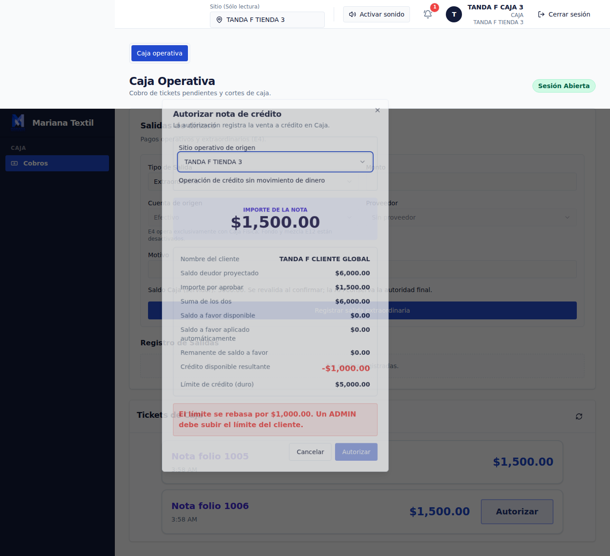
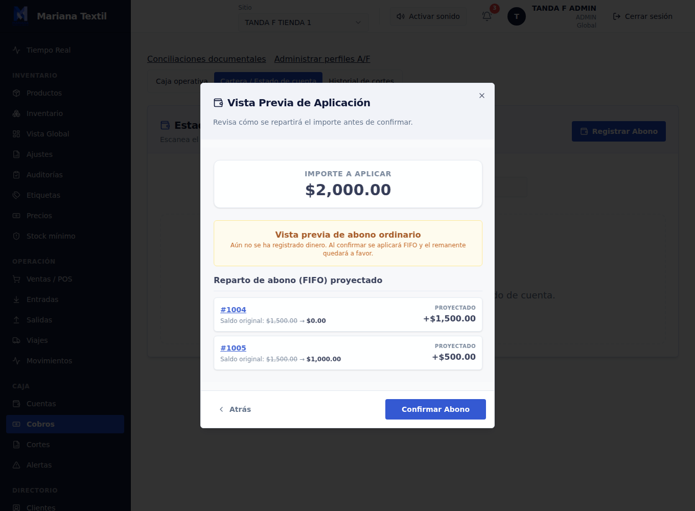
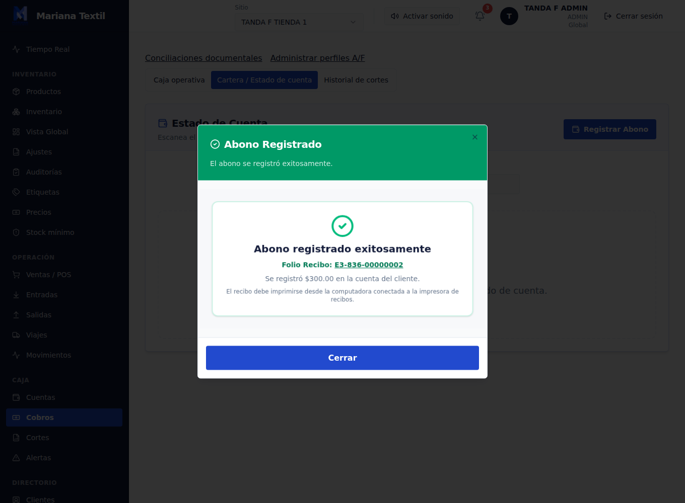
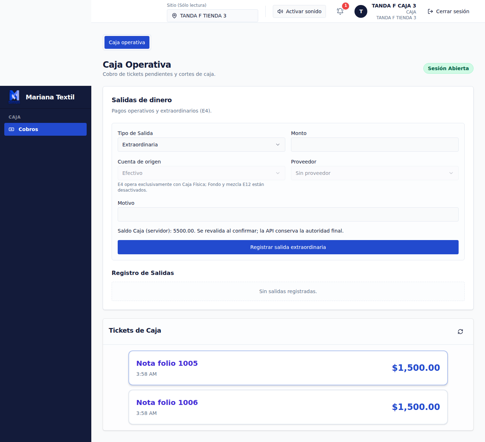
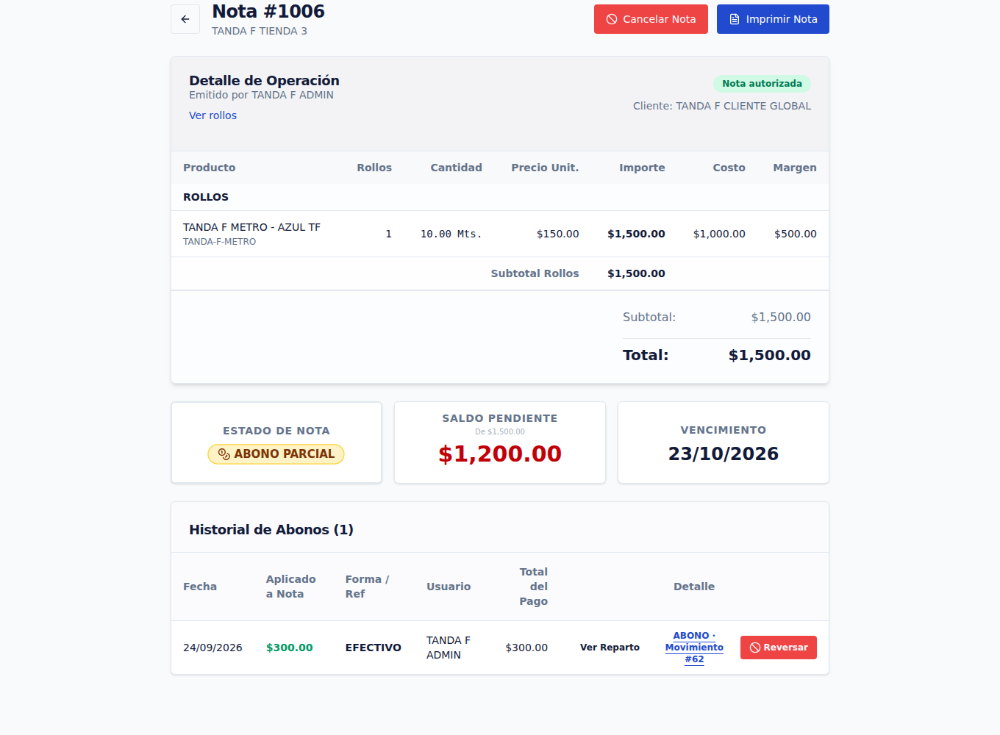
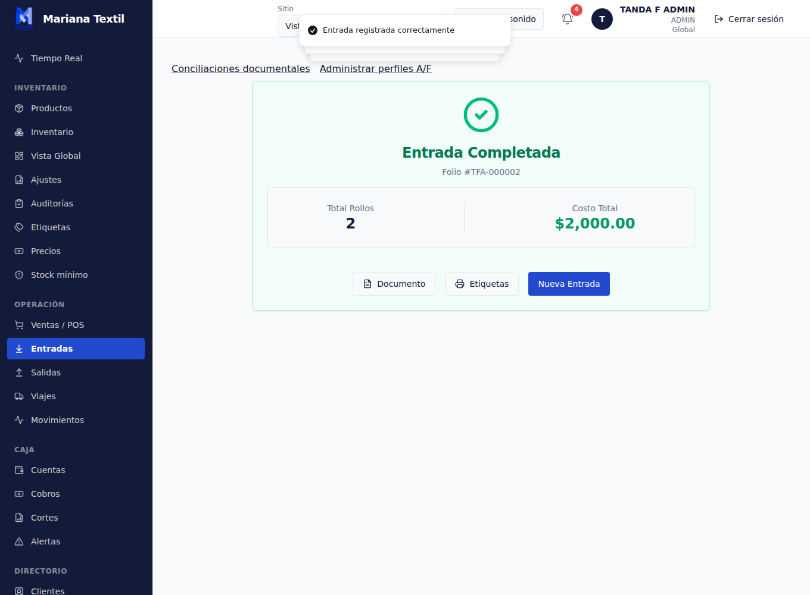
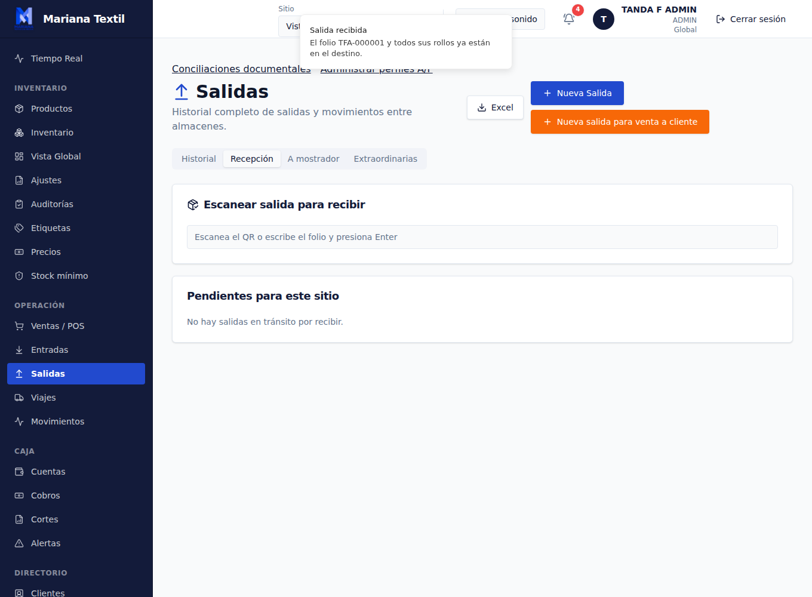
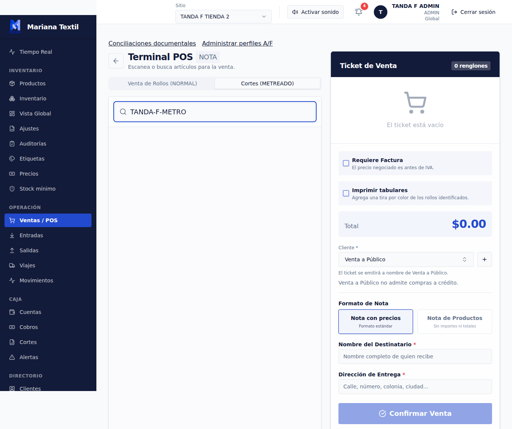
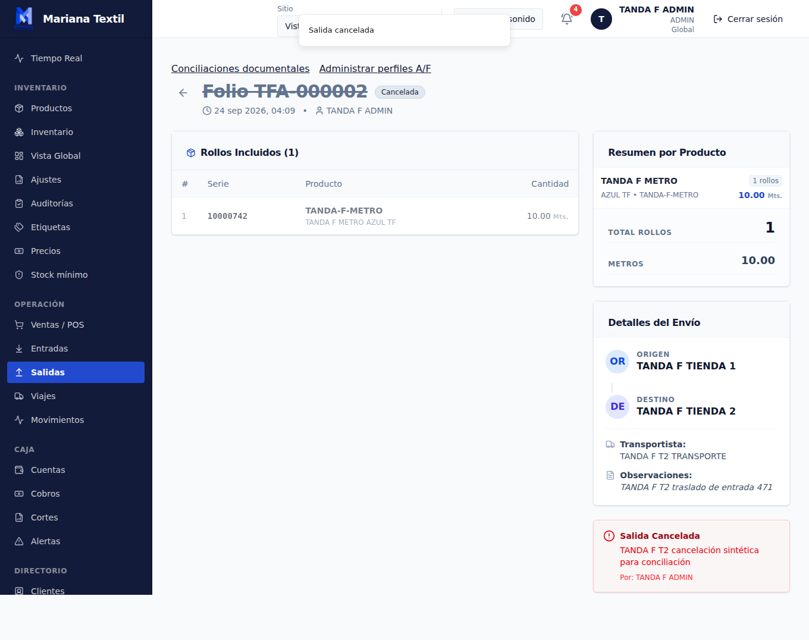
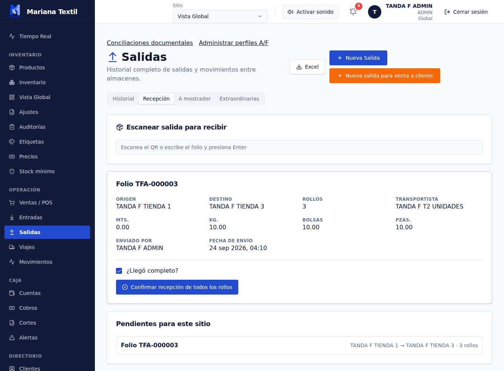

1 · Crédito: límite global
Proyección de $6,000 frente a límite de $5,000; autorización natural deshabilitada. El seguimiento separado de API confirmó 409 y rollback.
Activo combinado local, sin recursos de red. Resultado general PARCIAL. La selección contiene únicamente capturas generadas con fixtures sintéticos de las tareas 1 y 2; no incluye catálogo copiado ni cuentas reales.

Proyección de $6,000 frente a límite de $5,000; autorización natural deshabilitada. El seguimiento separado de API confirmó 409 y rollback.

Vista previa del abono repartido primero a la nota global más antigua, sin preferencia por tienda.

Abono sin deuda autorizada que genera saldo a favor.

Aplicación automática del anticipo al autorizar una nota posterior.

Nota final con $300 aplicado y saldo pendiente de $1,200.

Entrada única guardada con dos series sintéticas METRO.

Primera serie recibida y disponible en la tienda destino.

Cero productos elegibles. No se habilitó catálogo ni gate; venta parcial, remanente, cancelación de venta y devolución quedan sin ejecutar.

Cancelación de salida en tránsito con restitución del rollo. No sustituye una cancelación de venta.

Recepción muestra METRO, KILO, PIEZA y BOLSA como categorías independientes, sin total mixto.